宝徳山稲荷大社（後編）/新潟県
新潟県にある驚愕の神社、宝徳山稲荷大社、略して宝徳稲荷。
そのスケールの大きさ、デザインの突飛さに感動した私はその数ヶ月後、再びその地を訪れたのであった。
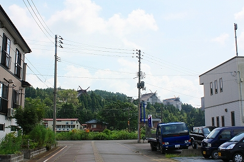
ん？何か前回と様子が違うぞ。
 → 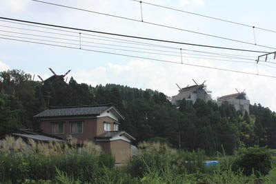
→ 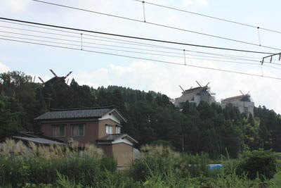
おお、そうか。
全体が白いシートで覆われているのか。
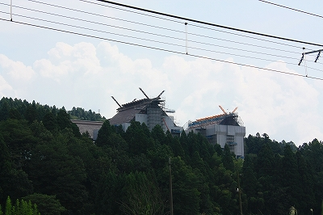
塗り替えか修繕工事なのだろう。かなり大規模な工事のようだ。
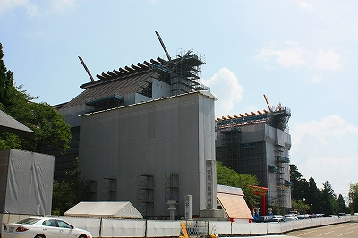 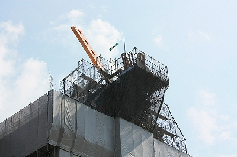
今回、宝徳稲荷に再訪したのは前回時間の都合で行けなかった奥宮を見るためである。
本殿のあるエリアから数百メートル離れたところに奥宮はある。
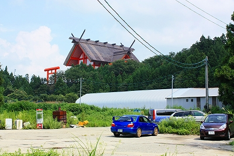
森を抜け視界が広がると、朱塗りの巨大な建物が目に飛び込んできた。
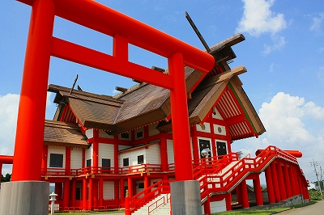 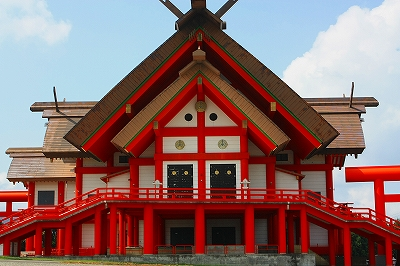
これが宝徳山稲荷大社の奥宮である。
先ほどまでの中高層建築ではないものの、その巨大さは圧倒的だ。
また屋根の形状も複雑で、特別な建物であることを表している。
特に正面の左右に広がった大階段はこの建物の敷居が異様に高いことを物語っている。
広大な駐車場に停まっている車は私のも含めて3台、そのうち1台は木陰に停車し、サラリーマン風の人がお昼寝中。
もう一台の人は、あ、降りてきた。お参りに来たのかな…と思ったらトイレでした。
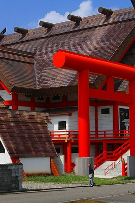
↑人と建物の大きさを比較されたし。
↓この三角の建物がトイレ。
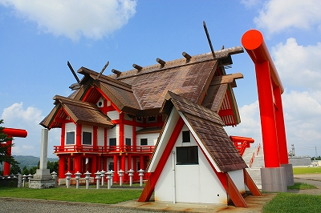
建物の直下に来るとその大きさに押しつぶされそうになる。
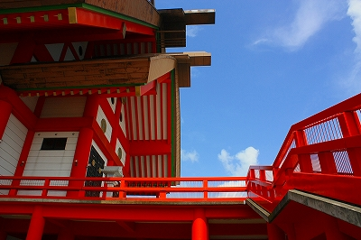
周囲は広々とした田園風景で、先ほどの本社エリアが木々に囲まれていたのとは対照的である。
そしてその田んぼの向こうには素敵な工場が。
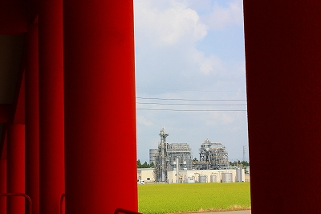 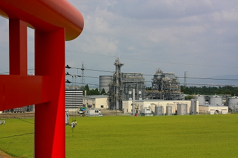
朱色の巨大建築から眺める田んぼの真ん中の工場（※）。何ともシュールな風景である。
※…後日調べたらガス田だそうで。
奥宮正面の扉は閉まっていた。普段は開けていないのだろうか。
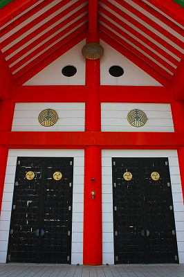
鳥居の台座には「奉納 平成五年」とある。建物自体もその頃に建てられたのだろう。
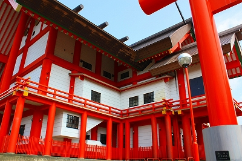 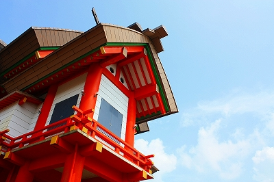
それにしても何故この神社はコレだけ大規模な建物を次から次へと建設できるのだろう？
…これはあくまでもウワサ話の域を出ない内容なのでココだけの話、ということで聞いていただきたいのだが、一説によるとご当地出身の、ホラ「まー、しょのー」で御馴染みのアノ人が深く関わっているとかいないとか…
もし本当だったら、凄く腑に落ちますね。違ってたらスイマセン。
傍らにあった神木化石。要は木の化石ね。
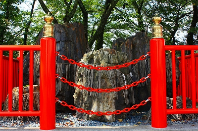
説明には「極めて霊力・神力は強い力を秘めています」とあった。変なのは「てにをは」だけではない。
やっぱりチョット普通のお稲荷さんとは違うサムシングがある。
隣には倉庫のような建物が建っている。
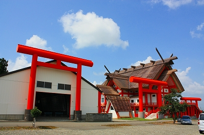
中には真っ赤な祠が鎮座していた。
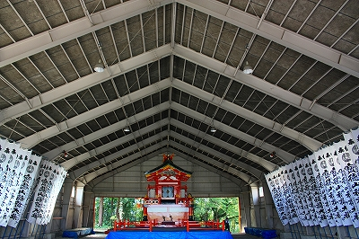 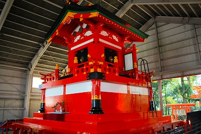
ここで何やら呪文のような祝詞を呟きお百度参りのようなことをしている人がいた。
うむ〜。本当にココは昔からある神社なのだろうか？建物といい参拝方法といい、あまりにもオリジナル過ぎやしまいか?
倉庫のような建物のさらに隣にはコンクリで出来た三角形の台が延々と並んでいた。
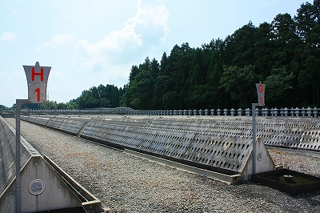
なんとロウソクを立てる台だという。
11月に開催される神幸祭において大量のロウソクが献灯されるのだが、その台なのだ。
そっか。Ｇ１とかＨ１とかあるのはロウソクを象ってるのか。
灯されるロウソクは10万本だそうで、消費量世界一という噂も。
今はほとんど無人だが、この広大な駐車場も奥宮の建物も蜀台も全ては神幸祭１日のためだけにあるといっても過言ではなかろう。
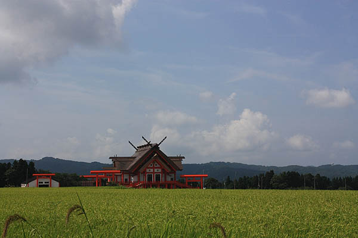
不思議なのはコレだけ巨大な社殿を構えている割には知名度が異様に低いこと。
伏見稲荷を頂点とした稲荷信仰は、笠間稲荷、豊川稲荷、最上稲荷、祐徳稲荷などのメジャー級稲荷が各地方で信仰を集めている。
そんな中、メジャーリーガー達に引けをとらないこの神社の知名度の低さは何なんだろう?
歴史はあれどやはり稲荷業界のメインストリームからは異端扱いされていたりするのだろうか？
近所にあったあの人の娘さんのポスター。
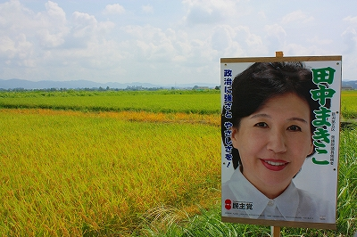
この数日後、あの人が権勢を揮った党が娘さんの所属する党に政権を奪取されるのであった。
諸行無常ですなあ。
2009.08.
珍寺大道場 HOME